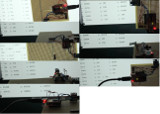

Fig.1: Assembly

Fig.2: Oscilloscope pattern
Fig.3: Compass values at different orientations
Reading the HMC5883 compass module via I2C from Python using an FTDI FT232RL in BitBang-Mode
A method for connecting a compass module to a computer via USB using only an FTDI chip, 4 wires, 2 resistors and a single Python script
- Introduction
- How I2C works
- Connecting the HMC5883 compass module with the FTDI
- Setting up Python FTDI bit-banging
- Python code to read the compass via I2C
What?
I've written code to read out the HMC5883 compass module via I2C using an FTDI FT232RL in BitBang-Mode.
There are FTDI chips with the "Multi-Protocol Synchronous Serial Engine" (MPSSE). These chips can speak I2C and SPI protocols natively, but they are also more expensive.
Microcontrollers can be programmed to speak I2C, but then software needs to be written for the microcontroller. Also a protocol for communicating with the computer needs to be thought up. Then there has to be another programm running on the computer which talks to the microcontroller. This seems cumbersome, if all you want to do is read a value from your computer.
So I decided to use the FTDI FT232RL. This chip does not support MPSSE, but I can put it into bit-bang mode and write to its ports directly from a single Python programme running on the computer. I can make it speak I2C in software from there. There are disadvantages: This is very slow. But it's sufficient for reading out a compass module, which hardly moves and is slow anyhow. The same goes for temperature sensors, relay boards, analog/digital converters which read values that change slowly - i.e. potentiometers to make simple analog usb input devices - or i2c pwm controllers for servo motors. And no custom code running on the hardware! Python is cross-plattform, so this code will work in Windows, MacOs and Linux.
A Python programme such as this one can be combined with Python Flask for making an easy web interface, which can be used to read values or change settings on the local network or the internet even. And the programme could be copied to an embedded computer such as the BeagleboneBlack or RaspberryPi using the same FTDI via the USB port without modifications. And that way there is no need for a client and server software and protocol to handle the communications, as the webserver in Python Flask will do all of this. Python is also very handy for data analysis, plotting and has native support for SQL databases.
When?
I've spent the past two days trying to get this to work right, until I finally had it running. I started with the PCA9685 PWM driver I want to use for controlling servo motors in another project, but it takes quite a few transactions until the chip actually does anything. So I decided to try to get the HMC5883 compass module to work first. Then I could use the i2c code, which I then know works, for the PCA9685.
Why?
There is a project I'm working on from time to time. It's a WiFi enabled robot which is, some day, supposed to drive around in my appartment autonomously.
I want to be able to tell it where to drive, i.e. to the kitchen. This will happen either via software or speech commands.
The robot will have a map in order to decide how to get to its destination. But to do this, it needs to be aware of where it is currently located.
This amounts to a very tough indoor localisation problem. Positioning systems such as GPS don't work indoors.
But there are other ways to localise indoors:
- One can monitor WiFi signal strengths of routers nearby, but this is inaccurate, because the signals bounce off of walls.
- Another way is to measure the rotations of the robots wheels and compute the robots displacement, while driving. But this doesn't work so well due to wheel slippage. This method is also very easily fooled when the robot is manually picked up and placed to another location.
- Acceleration sensors are another inaccurate way of computing the robots displacement.
- Measuring the distance of the robot to walls is also possible (by laser or ultra sound), but usually there is furnature or other obsticales in the way. Perhaps even moving obsticales.
- There is also the possibility of analyzing video from a camera mounted on the robot. Software can detect characteristics in the image i.e. edges and match them against a database of known locations.
In short: there are many ways and most of them perform very poorly. A viable solution, however, is to combine multiple methods. And this is what I want to try with my robot. But to do this: I need many many sensors. And therefore I need to read out sensors such as the HMC5883 compass module. Many sensor modules use the i2c protocol for reading out the values, so I know this code is going to come in very handy.
Background?
I2C background
I2C is actually quite easy, once you wrap your head around how it works. The aim is to be able to transfer a byte of data (8 bit) to and from slave devices. These devices each have adresses, so they can be daisy chained along two wires without getting mixed up. One of these wires is for the clock signal and one for the data signal. The data signal is read when the clock signal changes. This is also why a slow master device such as the FT232RL, which I use, usually still work - unless the slave restricts the time for transactions, but most don't. The clock signals are slower, but the the data signals come synchronously to the clock signals, anyhow.
In order to write, the master has to do the following:
- 1. Send a start sequence indicating the intention to write to the bus. The slaves begin listening after this sequence.
- 2. Send the 7 bit address of the slave device. Now all the other slaves stop listening and only the one slave, which was adressed, will continue listening.
The 8th bit after the 7 bit slave address indicates whether the master wants to write to or read from the slave device. This bit is set to write.
The slave will respond with one bit, acknowledging or not. If it does not acknowledge this can either mean the slave isn't connected or the address is wrong - 3. So now the slave knows the master is talking to it and all the other slaves have stopped listening and won't interfere. The slave is also prepeared to receive a byte. This next byte indicates which register we would like to write to. And will be acknowledged by the slave.
- 4. And then we send another byte, which contains the data which we want to write to that register. Which will also be acknowledged.
- 5. The master finished by sending the stop sequence
And in order to read, the master has to do this:
- 1. Send a start sequence.
- 2. Send the 7 bit address of the slave device. The 8th bit set to write, because we are writing the register address we want to read later. Slave acknowledges.
- 3. Send a byte the register address we would like to read from. Slave acknowledges.
- 4. Send another start sequence.
- 5. Send the 7 bit address of the slave device. The 8th bit set to read this time, because now we want to read. Slave acknowledges.
- 6. Change the clock line 8 times and read the bits the slave transmits inbetween. Then the master has to acknowledge.
- 7. And send the stop sequence
Many slaves also support the "auto-increment feature". That is, if you continue reading by changing the clock line another 8 times, after acknowledging, the slave will automatically select and transfer the next register and so on.
This comes in handy when you are reading 16 bit values and you need the first 8 bits and then the last 8 bits, without sending register addresses for subsequent registers every time.
So how do I know this? There are two important documents: The "UM10204 I2C-bus specification and user manual" for I2C in general and the HMC5883 compass module datasheet. But these only helped me to come to a general idea. I learn quicker by looking at other peoples source codes. So I checked out the arduino i2c libraries, the adafruit i2c libraries, raspberrypi code, avr code and so on - until I was able to build my own. And an oscilloscope proved very very necessary. I had the FTDI in the wrong mode at first, I was shifting bits in the wrong order, I was shifting too many or too little bits, I was missing the right moment for reading, I had wrong resistors connected, I missed the right moment for switching the io pin from read to write, I was accidentally sending inverted signals and there were quite a lot of other issues - you really need an oscilloscope to sort them out.
How?
Connecting the module
I've connected the HMC5883 compass module to the FTDI FT232RL directly. The clock line of the compass module is connected to the TXD line of the FTDI. The data line is connected to the RXD line. I'm using 1.8 kOhm Resistors as pull-ups. These are connected from both lines to Vcc. The breakout board I use for the FT232RL provides a jumper for 3,3V or 5V operation. This jumper is set to 3,3V - the compass module can't handle 5V! The compass Vcc and the pull-ups are also connected to the 3,3V line of the FT232RL. Ground goes to Ground.
Setting up Python for FTDI bit-banging
Bit-banging is the process of programmatically changing the input/output pins. This has to work beforehand and can be verified by measuring the pins or connecting an LED. Setting this up differs between Windows und Linux.
On Windows:
- 1. Download and install Python 2.7 32-Bit. (I assume 64-Bit Python will not work due to the 32-Bit libftdi library, but I have not tested this!)
- 2. Install pylibftdi via the command prompt by issuing: "pip install pylibftdi"
- 3. Download and extract libftdi1-1.0_devkit_mingw32_17Feb2013
- 4. Copy "_ftdi1.pyd" and "ftdi1.py" from "libftdi1-1.0_devkit_mingw32_17Feb2013\python2.7\site-packages" to "C:\Python27\Lib\site-packages"
- 5. Copy "libftdi1.dll" and "libusb-1.0.dll" to the location of python.exe (or to "Windows\System32" (on 32-Bit Windows) or "Windows\SysWow64" (on 64-Bit Windows))
- 6. Connect the FTDI. Windows will automatically download drivers - the wrong drivers. Let it finish then download and run "zadig_v2.0.1.160"
Select "List all Devices" from the menu. Select the FTDI device from the drop down list. Then select "libusbK" instead of "WinUsb" and click on replace.
The Windows device manager should show the ftdi as a libusbK device now.
On Linux:
- 1. Download and install Python via your distributions package manager
- 2. Install pylibftdi via the terminal by issuing: "pip install pylibftdi"
- 3. Install libftdi via the package manager
- 6. Connect the FTDI. Verify this by running "lsusb"
- It will now work, but only with administrator rights. In order to changes this (I have not tested this!), add:
to
SUBSYSTEM=="usb", ATTRS{idVendor}=="0403", ATTRS{idProduct}=="6010", MODE="0664", GROUP="plugdev"
and make sure your user is in the group "plugdev":vi /etc/udev/rules.d/99-libftdi.rules
usermod -a -G plugdev [username]
The pins on the FTDI should be pulled to high, when running the following Python code:
from pylibftdi import BitBangDevice
bb = BitBangDevice()
bb.port = 0b11111111
And to low, when this code is run:
from pylibftdi import BitBangDevice
bb = BitBangDevice()
bb.port = 0b00000000
The bits in the port byte correspond to the pins of the chip like so:
bit no pin name 0 txd 1 rxd 2 rts 3 cts 4 dtr 5 dsr 6 dcd 7 ri
Reading the compass
Reading the values is now "just" a matter of setting the clock and data lines to match the i2c specification and that of the compass module. It took me quite some time to get that right (see Fig.2), but the result is Python code which is no longer than 200 lines and handles it all. The code could be shortend by removing the debug options, the comments and adding an i2cread function, but I think it's more human-readable this way:
1 2 3 4 5 6 7 8 9 10 11 12 13 14 15 16 17 18 19 20 21 22 23 24 25 26 27 28 29 30 31 32 33 34 35 36 37 38 39 40 41 42 43 44 45 46 47 48 49 50 51 52 53 54 55 56 57 58 59 60 61 62 63 64 65 66 67 68 69 70 71 72 73 74 75 76 77 78 79 80 81 82 83 84 85 86 87 88 89 90 91 92 93 94 95 96 97 98 99 100 101 102 103 104 105 106 107 108 109 110 111 112 113 114 115 116 117 118 119 120 121 122 123 124 125 126 127 128 129 130 131 132 133 134 135 136 137 138 139 140 141 142 143 144 145 146 147 148 149 150 151 152 153 154 155 156 157 158 159 160 161 162 163 164 165 166 167 168 169 170 171 172 173 174 175 176 177 178 179 180 181 182 183 184 185 186 187 188 189 190 191 192 193 194 195 196 197 198 199 |
2015-04-02 D.Salzner
from pylibftdi import BitBangDevice
import time
import sys
bb = BitBangDevice()
debug = 0
PIN_0_TXD = 0
PIN_1_RXD = 1
PIN_I2C_SCL = PIN_0_TXD
PIN_I2C_SDA = PIN_1_RXD
# --- gpio ---
def pout(pin, wert):
if wert == 1:
bb.port = bb.port | (1 << pin)
else:
bb.port = bb.port & ~(1 << pin)
time.sleep(0.001)
def pin(pin):
if bb.port & (1<<pin):
return 1
else:
return 0
def pinit():
bb.direction = bb.direction | (1 << PIN_I2C_SCL) # Clock aus Ausgang
bb.direction = bb.direction | (1 << PIN_I2C_SDA) # SDA als Ausgang
# --- i2c ---
def i2cstart():
pout(PIN_I2C_SDA, 1)
pout(PIN_I2C_SCL, 1)
pout(PIN_I2C_SDA, 0)
pout(PIN_I2C_SCL, 0)
def i2cstop():
pout(PIN_I2C_SDA, 0)
pout(PIN_I2C_SCL, 1)
pout(PIN_I2C_SDA, 1)
def i2cwrite(wert):
if debug == 1:
sys.stdout.write("[S: ")
for i in range(8): # Rueckwaerts rausshiften
if(wert & 0x80):
pout(PIN_I2C_SDA, 1)
if debug == 1:
sys.stdout.write("1")
else:
pout(PIN_I2C_SDA, 0)
if debug == 1:
sys.stdout.write("0")
pout(PIN_I2C_SCL, 1)
pout(PIN_I2C_SCL, 0)
wert = wert << 1
pout(PIN_I2C_SDA, 1)
bb.direction = bb.direction & ~(1 << PIN_I2C_SDA) # als Eingang
pout(PIN_I2C_SCL, 1)
ack = pin(PIN_I2C_SDA)
if debug == 1:
sys.stdout.write(", " + str(ack)) # ist 0, wenn der Slave acknowledged. sonst 1 - da wir den Pin auf 1 gelassen haben.
pout(PIN_I2C_SCL, 0)
bb.direction = bb.direction | (1 << PIN_I2C_SDA) # wieder als Ausgang
if debug == 1:
sys.stdout.write("]\n")
time.sleep(0.01) # bisschen entzerren, damit am Oszi leichter lesbar
# --- HMC5883 ---
chipAddress = 0x3C
print format(chipAddress, '#010b')
def hmc5883init():
# Startsequenz
i2cstart()
# Chip ansprechen und Write vorbereiten
ersten8 = chipAddress
ersten8 = ersten8 & ~(1 << 0) # read/write auf 0, zum schreiben
i2cwrite(ersten8) # erwarte danach 0 als ack
# Modus Register auswaehlen
i2cwrite(0x02) # erwarte danach 0 als ack
# und kontinuierliche Messung reinschreiben
i2cwrite(0x00) # erwarte danach 0 als ack
# Abschliessen
i2cstop()
def hmc5883lesen(register):
i2cstart()
# Chip ansprechen und Write vorbereiten
ersten8 = chipAddress
ersten8 = ersten8 & ~(1 << 0) # read/write auf 0, zum schreiben
i2cwrite(ersten8) # erwarte danach 0 als ack
# Register anwaehlen
i2cwrite(register) # erwarte danach 0 als ack
i2cstart()
# und jetzt lesen vorbereiten... i2c_rep_start
ersten8 = chipAddress
ersten8 = ersten8 | (1 << 0) # read/write auf 1, zum lesen
i2cwrite(ersten8) # erwarte danach 0 als ack
if debug == 1:
sys.stdout.write("[L: ")
bb.direction = bb.direction & ~(1 << PIN_I2C_SDA) # als Eingang
msb = 0
for i in range(8): # eigl 8 - danach kommen die naechsten 8 des Wertes
pout(PIN_I2C_SCL, 1)
msb <<= 1
if(pin(PIN_I2C_SDA) == 1):
if debug == 1:
sys.stdout.write("1")
msb |= 0x1
else:
if debug == 1:
sys.stdout.write("0")
pout(PIN_I2C_SCL, 0)
if debug == 1:
sys.stdout.write("]")
bb.direction = bb.direction | (1 << PIN_I2C_SDA) # wieder als Ausgang
pout(PIN_I2C_SDA, 0) # ich muss acknowledgen...
pout(PIN_I2C_SCL, 1)
pout(PIN_I2C_SCL, 0)
bb.direction = bb.direction & ~(1 << PIN_I2C_SDA) # als Eingang
if debug == 1:
sys.stdout.write("[L: ")
lsb = 0
for i in range(8): # eigl 8 - danach kommen die naechsten 8 des Wertes
pout(PIN_I2C_SCL, 1)
lsb <<= 1
if(pin(PIN_I2C_SDA) == 1):
if debug == 1:
sys.stdout.write("1")
lsb |= 0x1
else:
if debug == 1:
sys.stdout.write("0")
pout(PIN_I2C_SCL, 0)
if debug == 1:
sys.stdout.write("]\n")
bb.direction = bb.direction | (1 << PIN_I2C_SDA) # wieder als Ausgang
pout(PIN_I2C_SDA, 0) # ich muss acknowledgen...
pout(PIN_I2C_SCL, 1)
pout(PIN_I2C_SCL, 0)
bb.direction = bb.direction & ~(1 << PIN_I2C_SDA) # als Eingang
# Abschliessen
i2cstop()
wert = ((msb<<8) | lsb)
return wert
pinit()
hmc5883init()
while True:
# Messungen holen
if debug == 1:
print "x"
x = hmc5883lesen(0x03) # Register 3, von der x-Komponente die vordersten Bits auswaehlen
y = hmc5883lesen(0x05)
z = hmc5883lesen(0x07)
print "x: " + str(x) + " \t y: " + str(y) + " \t z: " + str(z)
print "-----"
time.sleep(0.1)
|
Progress?
The module is fully working and the values change when moving it as expected (Fig.3). The next step could be to compute an angle from the value and calibrate it to display a compass needle pointing north.
I will be using the code to speak with other I2C devices - especially the PWM driver.